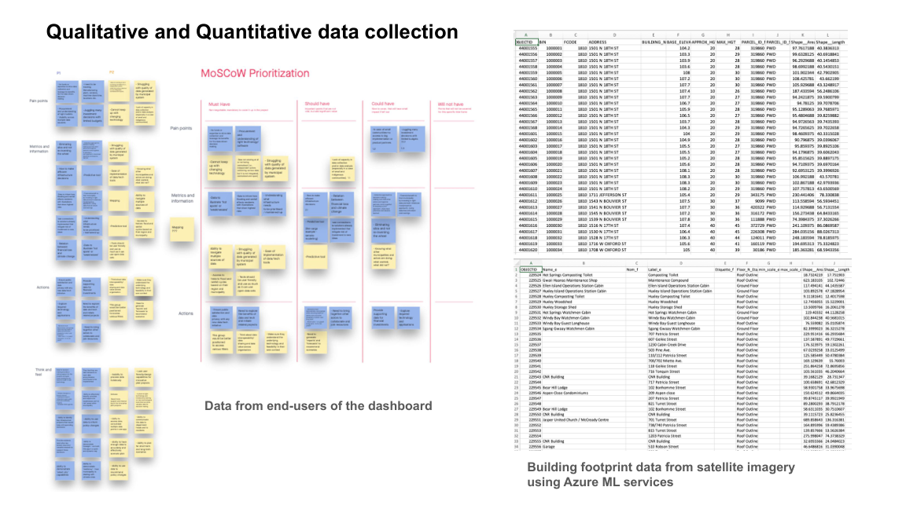
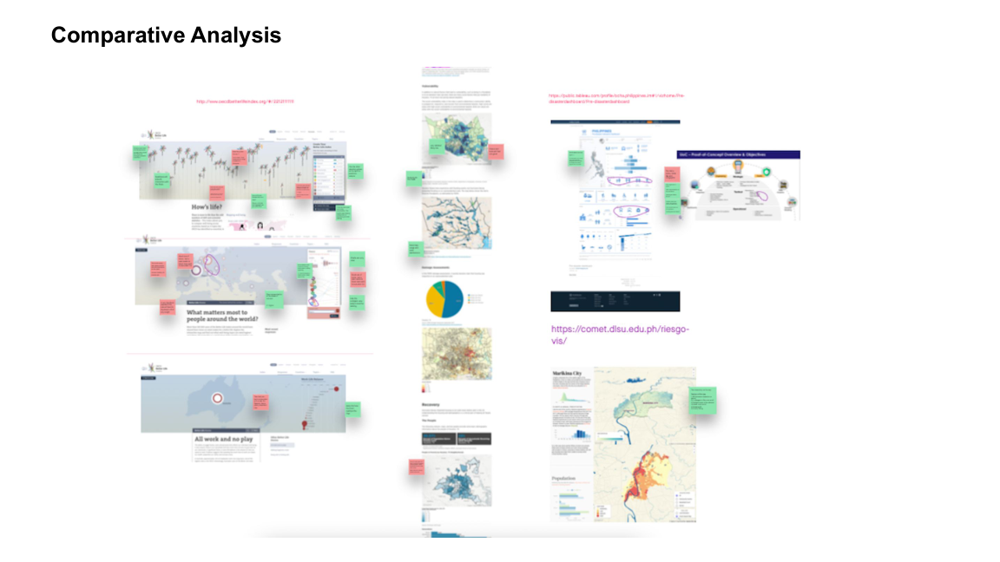
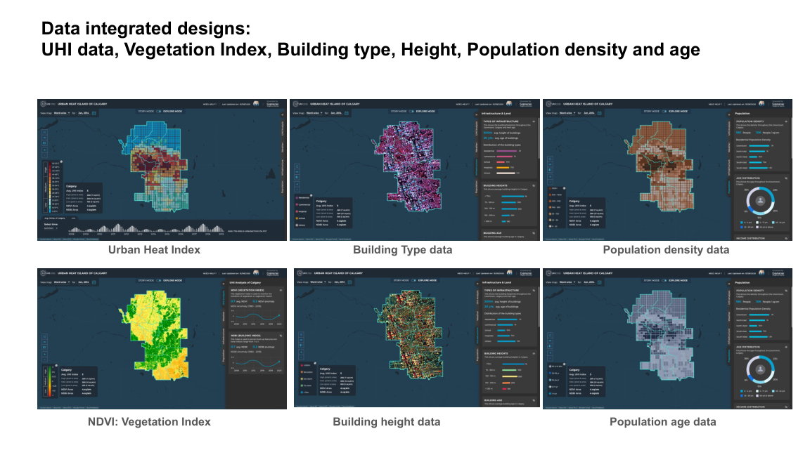
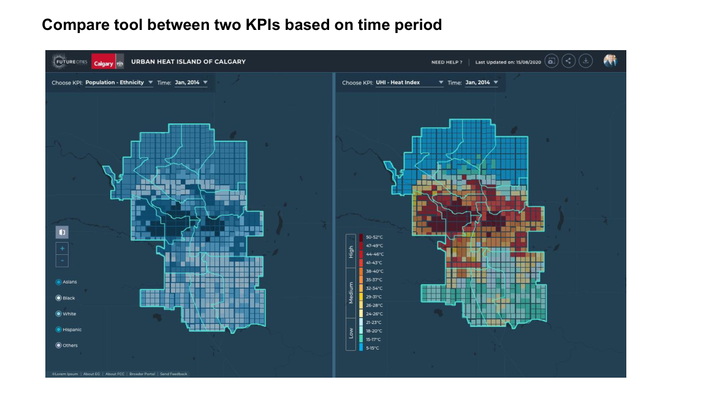
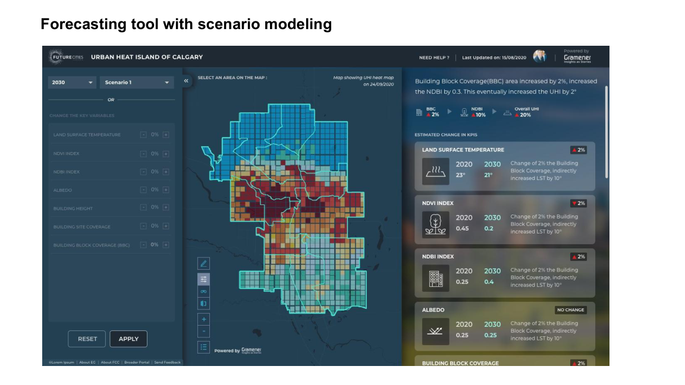

UX research and dashboard design for “AI for the Resilient City” (Gramener × Evergreen, under a Microsoft AI for Earth grant) — a geospatial analytics tool that lets Canadian municipalities see, compare, and forecast urban heat to plan climate action.
Canadian cities face the urban heat island (UHI) effect — pockets that run hotter than their surroundings, driving heat illness and energy use. Finding and tracking those hotspots is hard: it needs many datasets stitched together, and the people who must act range from GIS experts to non-technical city officials.
How might we help municipal stakeholders — across very different levels of expertise — see where heat is worst, understand what drives it, and plan evidence-based climate action?
A live geospatial tool, piloted in the City of Calgary, that lets stakeholders analyze and plan climate interventions at a micro (ward / building) level — and forecast UHI to 2030.
Evergreen, a Canadian non-profit building low-carbon, inclusive cities, partnered with Gramener — a design-led data-science firm — under a Microsoft AI for Earth grant to build “AI for the Resilient City.” The tool fuses geospatial analytics, AI, and big data into a single source of truth so municipalities can pinpoint problem areas and act.
The hard part wasn’t the data — it was making heat legible and actionable for a mixed audience. As the UX researcher and designer, my job was to bridge climate scientists, data engineers, and city officials, and turn complex spatial data into dashboards people could actually decide from.
Geospatial + climate data is technical, and the audience spans GIS professionals to casual municipal users. Interviews and contextual inquiry surfaced how each user actually reasons about heat and risk; SME consultation kept the science correct; comparative analysis set the design bar; usability testing made the dashboards intuitive.
Constraints I balanced: Data feasibility was a hard limit — not every desired variable was reliably available. I ran workshops to balance user needs against what the data could support, and used MoSCoW to keep scope honest.
Before designing a single screen, I grounded the work in users and evidence. (Click any image to open it full size.)


All dashboard interfaces and data visualizations were designed by me in Figma and Illustrator, and prototyped in Figma and InVision. The tool ships three modes — a guided Story Mode, an explore / Compare view, and a Forecast view. (Click any image to open it full size.)
Video prototype: Story Mode walks non-expert stakeholders through the city’s heat picture as a guided narrative — answering broad questions before they dive into the explore and forecast modes.
For GIS analysts and city planners, the explore views expose the underlying data layers, side-by-side comparisons, and scenario forecasts.



Engage the full stakeholder range from day one. The tool served everyone from GIS pros to casual municipal users — I’d map that expertise spectrum at kickoff, not midway.
Build continuous feedback loops. Integrating user feedback at every stage kept the design aligned with real needs; I’d formalize that cadence even earlier.
Win engineers with evidence. When developers pushed back on new visualizations, user-engagement metrics, drop-off rates, and usability results were what moved decisions — data-driven justification over opinion.
Balance ambition with data feasibility. Workshops to iterate use-cases against what the data could actually support kept the roadmap real.